Gambler's Ruin Problem
Two gamblers Alice and Bob play the following game: Alice repeatedly tosses a fair coin. After each toss that comes up H, Bob pays Alice one dollar. After each toss that comes up T, Alice pays Bob one dollar. The game continues until either one or the other gambler runs out o f money. If Alice starts with $A and Bob starts with $B,
What is the probability that, when the game ends, Alice has all the cash?
What is the expected duration of the game?
Solution
Lets solve the problem using the Doob’s Optional stopping Theorem for martingales. Let 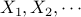 be the increments of Alice’s wealth. Hence 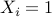, depending on H or T. Hence, change in Alice’s cash is
Define
Clearly 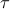 is a stopping time relative to the natural filtration 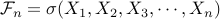. 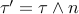 is also a stopping time.
(1) Probability of Alice winning
The sequence 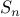 is a martingale relative to the natural filtration 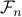. Hence, using Optional Stopping Theorem for 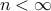,
As 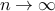, the probability that 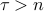 converges to zero.
The last term in the above equation is the expectation of a bounded martingale
bounded between  and 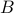 and converges to 0. Thus,
and 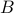 and converges to 0. Thus,
Hence, probability that Alice has all the cash 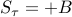 is
(2) Expected duration of game.
The sequence 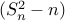 is a martingale relative to the natural filtration . Hence, using Optional Stopping Theorem for ,
As , the probability that converges to zero. Hence,
Hence, the expected duration of the game is AB